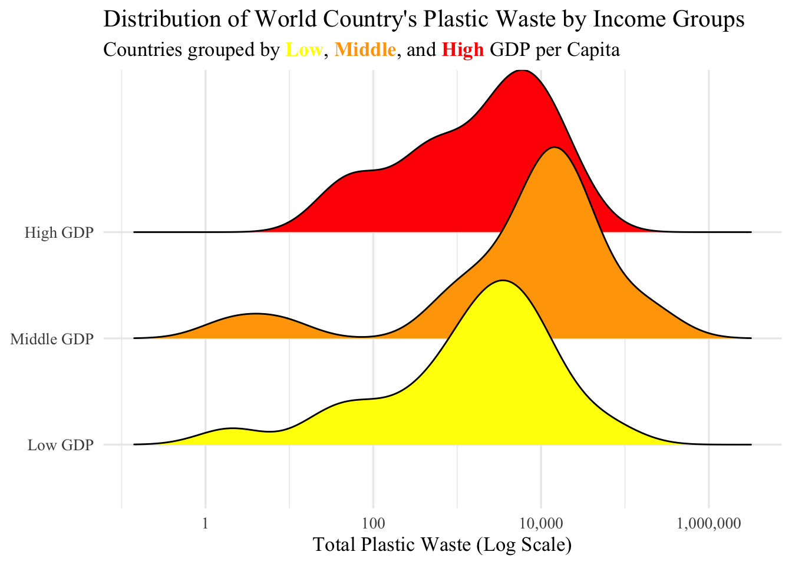
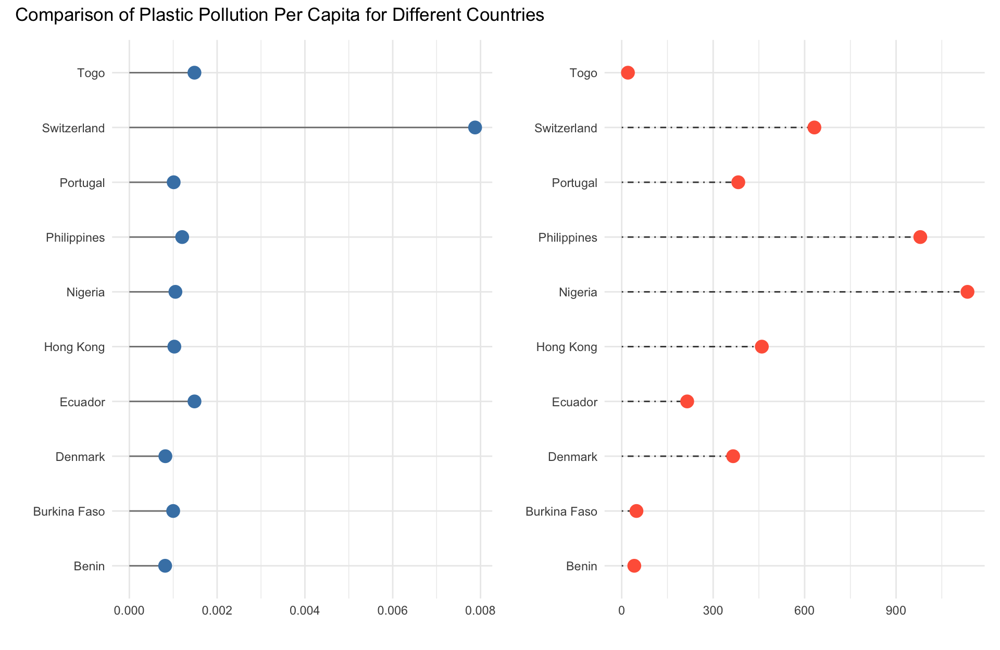

library(tidyverse)
library(lubridate)
library(ggridges)
library(ggtext)
library(scales)
library(broom)
library(knitr)
library(patchwork)Project Check Point 4
Project Checkpoint 4
Find All of project 4 checkpoint under the Project CP 2 and 3 (to read the data in)
Project 4 Library
Checkpoint 2
Break Free from Plastic: Plastic Pollution Data
Background
This is what the first few rows of the data set looks like:
Custom data proportion plastic types summary function:
New column: proportion of plastic types
prop_summary <- function(df) {
df |>
pivot_longer(cols = c(hdpe, ldpe, o, pet, pp, ps, pvc),
names_to = "plastic_type",
values_to = "count") |>
mutate(prop = count / grand_total) |>
group_by(plastic_type) |>
summarize(mean_prop = mean(prop, na.rm = TRUE),
total_count = sum(count, na.rm = TRUE))
}Summary: Proportion of Plastic Types
prop_summary(plastics)Custom total plastic by plastic type by country summary function:
New columns: Plastic Type, Total
plastic_types <- c("hdpe", "ldpe", "o", "pet", "pp", "ps", "pvc")
tot_plastic_types = function(type) {
plastics |>
group_by(country) |>
summarize(plastic_type = type,
total = sum(get(type), na.rm = TRUE))
}Summary: Total Plastic by Plastic Type by Country
map(plastic_types, tot_plastic_types) |>
bind_rows()Checkpoint 3
library(tidyverse)
library(ggplot2)
library(purrr)
library(lubridate)
library(dplyr)
# get_gdp <- function(country, key = my_key) {
# country <- URLencode(country)
# url <- glue("https://api.api-ninjas.com/v1/gdp?country={country};X-Api-Key={key}")
# my_data <- safely(fromJSON)(url)
# if (is.null(my_data$result)) {
# return(NA)
# } else {
# return(my_data$result)
# }
# }
plastics <- readr::read_csv('https://raw.githubusercontent.com/rfordatascience/tidytuesday/main/data/2021/2021-01-26/plastics.csv')
# Load pre-saved GDP data (originally fetched from API Ninjas GDP API)
gdp_df <- read.csv("gdp.csv")
# Align column name for merging
names(gdp_df)[names(gdp_df) == "Country"] <- "country_merge"
gdp_df <- gdp_df |> select(-country)
names(gdp_df)[names(gdp_df) == "country_merge"] <- "country"
head(gdp_df)
names(plastics)#### Country Population and Square Kilometers Data for years 2019-2020:
census_data <- read.csv("IDB_04-15-2026.csv")
head(census_data)
tail(census_data)
#U.S. Census Bureau. (2026). *International Data Base: Custom table — population and area* \[Data tool\]. U.S. Department of Commerce. <https://www.census.gov/data-tools/demo/idb/>
#### Cleaning Data
# remove repetitive rows containing year
census_data <- census_data[!is.na(census_data$Year),]
# convert year to numeric
census_data$Year <- as.numeric(census_data$Year)
# convert column names to lower case
names(census_data) <- str_to_lower(names(census_data))
# rename 'name' column to 'country'
names(census_data)[names(census_data) == 'name'] <- 'country'
# Convert population and area to numeric (they read in as strings with commas)
census_data$population <- as.numeric(gsub(",", "", census_data$population))
census_data$area.in.square.kilometers <- as.numeric(gsub(",", "", census_data$area.in.square.kilometers))
# correct census_data and plastics names to match
census_data <- census_data |>
mutate(country = case_when(
country == "Côte d’Ivoire" ~ "Cote D_ivoire",
country == 'Korea, South' ~ 'Korea',
country == 'Taiwan' ~ 'Taiwan_ Republic of China (ROC)',
country == 'United States' ~ 'United States of America',
TRUE ~ country
))
plastics <- plastics |>
mutate(country = case_when(
country == 'ECUADOR' ~ 'Ecuador',
country == 'NIGERIA' ~ 'Nigeria',
country == 'United Kingdom of Great Britain & Northern Ireland' ~ 'United Kingdom',
TRUE ~ country
))
#### Merging Data
# Merge census data
plastics <- merge(plastics, census_data, all.x = TRUE, by = c('country','year'))
# Merge GDP data
plastics <- merge(plastics, gdp_df, all.x = TRUE, by = c('country', 'year'))
names(plastics)plastics |>
group_by(country) |>
summarise(
total_plastic = sum(grand_total, na.rm = TRUE),
avg_gdp = mean(gdp_per_capita_nominal, na.rm = TRUE)
) |>
ggplot(aes(x = total_plastic, y = country, fill = avg_gdp)) +
geom_col() +
scale_x_continuous(labels = scales::comma) +
labs(
title = "Plastic Waste by Country and GDP Per Capita",
x = "Total Plastic Waste",
y = "Country",
fill = "GDP Per Capita (USD)"
)plastics |>
group_by(country) |>
summarise(
total_plastic = sum(grand_total, na.rm = TRUE),
avg_population = mean(population, na.rm = TRUE)
) |>
ggplot(aes(x = avg_population, y = total_plastic)) +
scale_x_continuous(labels = scales::comma, breaks = seq(0, 1500000000, by = 250000000)) +
geom_point(color = "dodgerblue", size = 1) +
labs(
title = "Plastic Waste vs. Population by Country",
x = "Population",
y = "Total Plastic Waste"
)Checkpoint 4 Code
Country’s Plastic Waste by GDP
plastics |> group_by(country) |> summarize(total_plastic = sum(grand_total, na.rm = TRUE), avg_gdp_per_capita = mean(gdp_per_capita_nominal, na.rm = TRUE)) |> filter(!is.na(avg_gdp_per_capita)) |> mutate(gdp_group = ifelse(avg_gdp_per_capita > 20000, yes = "High GDP", no = ifelse(avg_gdp_per_capita < 5000, yes = "Low GDP", no = "Middle GDP")), gdp_group = factor(gdp_group, labels = c("Low GDP", "Middle GDP", "High GDP"))) |> ggplot(aes(x = total_plastic, y = gdp_group, fill = gdp_group)) + geom_density_ridges() +
scale_x_log10(labels = scales::label_comma()) +
scale_fill_manual(values = c("Low GDP" = "yellow",
"Middle GDP" = "orange",
"High GDP" = "red")) + labs(title = "Distribution of World Country's Plastic Waste by Income Groups", subtitle = "Countries grouped by <span style='color: yellow;'>**Low**</span>, <span style='color: orange;'>**Middle**</span>, and <span style='color: red;'>**High**</span> GDP per Capita", x = "Total Plastic Waste (Log Scale)", y = NULL) + theme_minimal(base_size = 13) + theme(text = element_text(family = "Times New Roman"), legend.position = "none", plot.subtitle = element_markdown())Picking joint bandwidth of 0.384
plastics_percap <- plastics |>
filter(!str_detect(country, pattern = "Taiwan"),
!str_detect(country, pattern = "EMPTY"),
population > 5000000) |>
group_by(country) |>
summarize(
plastic_percap = sum(grand_total, na.rm = TRUE) / mean(population, na.rm = TRUE),
gdp_ppp = mean(gdp_ppp, na.rm = TRUE)
)
plastic_percap_lolipop = (plastics_percap |> arrange(desc(plastic_percap)))[1:10,] |>
ggplot(mapping = aes(x = plastic_percap, y = country)
) +
geom_segment(aes(yend = country,
x = 0,
xend = plastic_percap),
color = "gray50") +
geom_point(size = 4, color = "steelblue") +
labs(x = "", y = "") +
theme_minimal()
gdp_percap_lolipop = (plastics_percap |> arrange(desc(plastic_percap)))[1:10,] |>
ggplot(mapping = aes(x = gdp_ppp, y = country)
) +
geom_segment(aes(x = 0, xend = gdp_ppp),
color = "grey25", linetype = "dotdash") +
geom_point(aes(x = gdp_ppp),
size = 4, color = "tomato") +
labs(x = "", y = "") +
theme_minimal()Top 10 Countries in Plastic Pollution per Capita and their GDP per Capita
plastic_percap_lolipop + gdp_percap_lolipop +
plot_annotation(title = "Comparison of Plastic Pollution Per Capita for Different Countries")
Three countries were omitted from the visual: Taiwan, Montenegro, and “EMPTY”. Taiwan was removed for likely issues with data collections methods as they had recorded significantly more plastic pollution than multiple of the largest countries. Montenegro was removed for the same reason, they had an implausible amount of plastic pollution for their very small population. Cleanup events without a specified location could not be correctly attributed to any country.
Linear Model: Does total plastic waste differ by country area and plastic type?
plastic_types <- c("hdpe", "ldpe", "o", "pet", "pp", "ps", "pvc")
tot_plastic_types = function(type) {
plastics |>
group_by(country) |>
summarize(plastic_type = as.character(type),
total = sum(get(type), na.rm = TRUE),
area = mean(area.in.square.kilometers, na.rm = TRUE))
}
model_data <- map(plastic_types, tot_plastic_types) |>
bind_rows()
LinearModel <- lm(total ~ plastic_type + area, data = model_data)
coeff = summary(LinearModel)
coeff
Call:
lm(formula = total ~ plastic_type + area, data = model_data)
Residuals:
Min 1Q Median 3Q Max
-9176 -1676 -562 -113 232119
Coefficients:
Estimate Std. Error t value Pr(>|t|)
(Intercept) 5.983e+02 1.674e+03 0.357 0.720966
plastic_typeldpe 1.094e+03 2.333e+03 0.469 0.639458
plastic_typeo 8.578e+03 2.333e+03 3.677 0.000265 ***
plastic_typepet 3.398e+03 2.333e+03 1.457 0.145956
plastic_typepp 8.336e+02 2.333e+03 0.357 0.721009
plastic_typeps -2.405e+02 2.333e+03 -0.103 0.917942
plastic_typepvc -4.597e+02 2.333e+03 -0.197 0.843880
area -9.090e-05 2.712e-04 -0.335 0.737615
---
Signif. codes: 0 '***' 0.001 '**' 0.01 '*' 0.05 '.' 0.1 ' ' 1
Residual standard error: 13300 on 447 degrees of freedom
(7 observations deleted due to missingness)
Multiple R-squared: 0.04901, Adjusted R-squared: 0.03412
F-statistic: 3.291 on 7 and 447 DF, p-value: 0.00201library(broom)
library(knitr)
#Had AI teach me the broom/knit way to make the mutate and kable statement
tidy(LinearModel) |>
mutate(across(where(is.numeric), \(x) round(x, 3))) |>
kable(caption = "Linear Model Coefficients: Total Plastic Waste by Plastic Type and Country Area")| term | estimate | std.error | statistic | p.value |
|---|---|---|---|---|
| (Intercept) | 598.294 | 1674.046 | 0.357 | 0.721 |
| plastic_typeldpe | 1093.569 | 2332.817 | 0.469 | 0.639 |
| plastic_typeo | 8577.677 | 2332.817 | 3.677 | 0.000 |
| plastic_typepet | 3397.754 | 2332.817 | 1.457 | 0.146 |
| plastic_typepp | 833.600 | 2332.817 | 0.357 | 0.721 |
| plastic_typeps | -240.477 | 2332.817 | -0.103 | 0.918 |
| plastic_typepvc | -459.677 | 2332.817 | -0.197 | 0.844 |
| area | 0.000 | 0.000 | -0.335 | 0.738 |
The linear model regressed total plastic waste on plastic type and country area. Overall the model explained very little of the variation in plastic waste (R^2= .034), but was statistically significant overall with F = 3.29, p = 0.002.
Using HDPE as the reference category, only the “other” plastic category differed significantly from HDPE, with about 8,578 more units of waste on average. The remaining plastic types LDPE, PET, PP, PS, and PVC did not significantly differ from HDPE with all p-values > 0.14.
Country area was not a significant predictor of total plastic waste with p = 0.738, suggesting that the physical size of a country does not meaningfully explain how much plastic waste it generates. This is somewhat surprising and indicates that plastic waste production is likely driven more by population, or economic activity than by land area. I want to repeat this with GDP and see if it is significant.